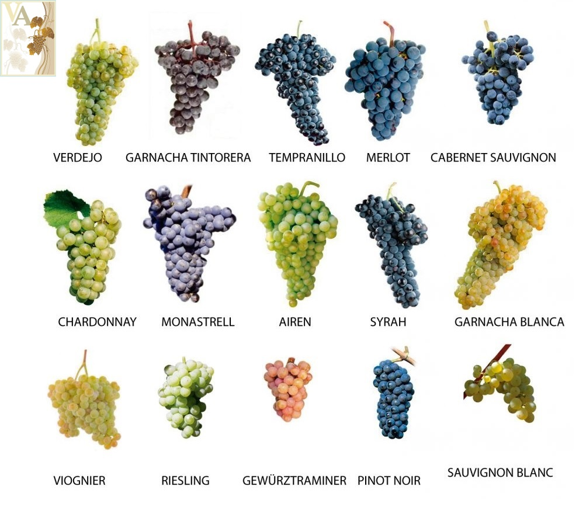

El Vino en Argentina
Argentina es el país con mayor producción de vino en Latinoamérica, guarda sus inicios en las uvas cereza, criolla chica y criolla grande, que se continúan utilizando pero no a tan gran escala como otras variedades de uva. Es el caso de la uva Malbec, que a finales del siglo XX se comenzó a cosechar en el país y hoy es la número uno del cepaje tinto. Lo cierto es que existen otras variedades de uvas que son importantes de conocer para poder entender más sobre el sabor y características de los vinos Argentinos, así como sobre la producción de este fruto en la Argentina. Es muy interesante pensar en todo el proceso y desarrollo que ha tenido -en la historia- el cultivo de la vid y la elaboración del vino. De todo lo que debe suceder para que nuestras copas sean llenadas con esa magnífica bebida. Olores, sabores, textura, colores, todo se conjuga en la primera probada y sí, ese magistral sabor depende de la vid y de las uvas.